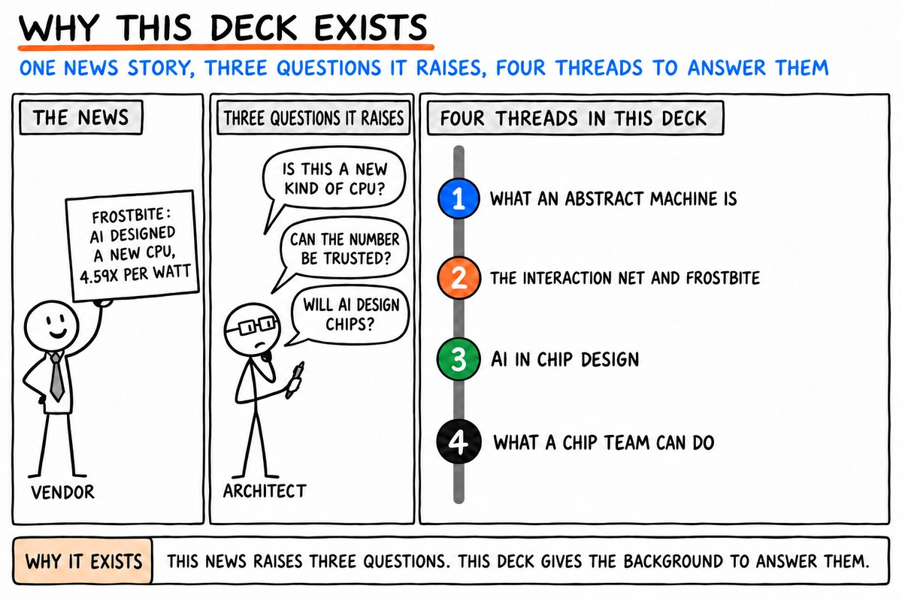
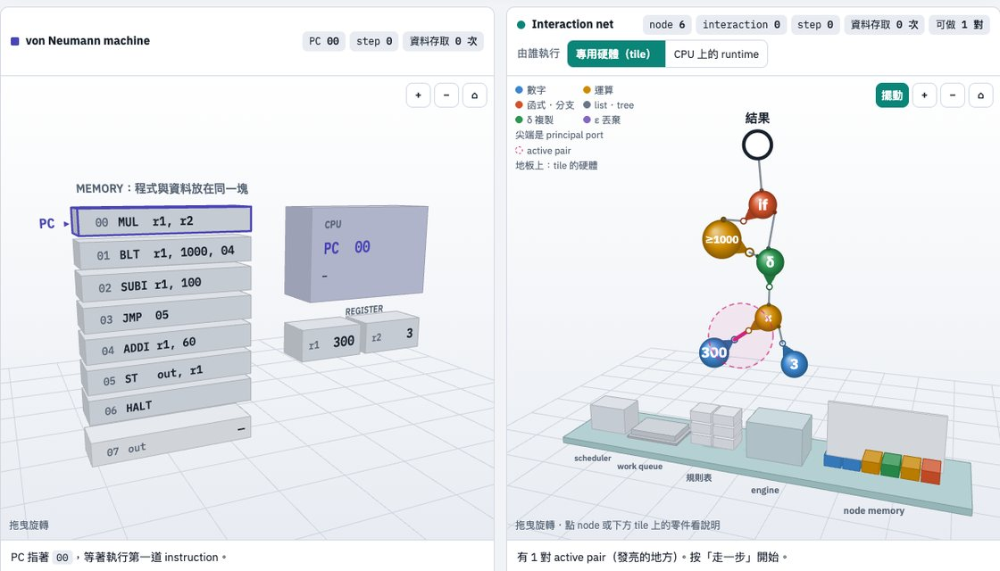
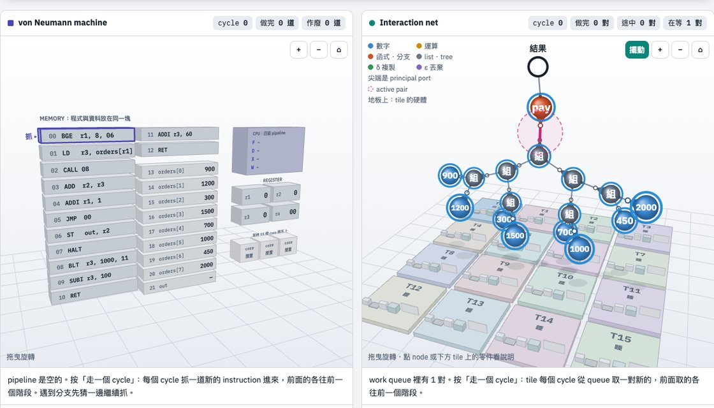
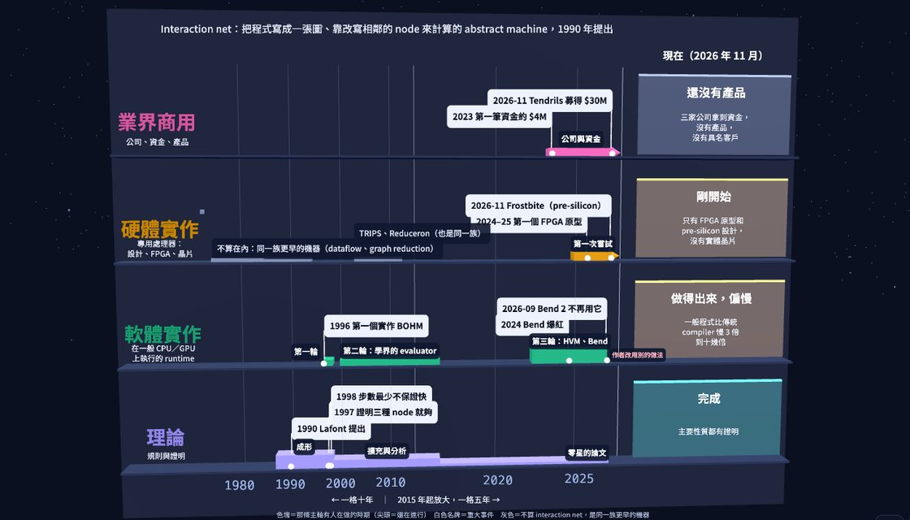

How to read the news about a CPU “discovered, designed, and verified end-to-end by AI”
In November 2026 a startup announced Frostbite, a processor design that runs interaction nets in place of a stream of instructions. The announcement reports 4.59 times the performance per watt of a comparison core, and says AI did the work from architecture to verification.
This site collects the background needed to read that announcement, in three forms: a long read, a whiteboard deck to present, and three interactive 3D explainers. Start with the long read; the deck carries the same argument for a meeting room, and the explainers let you watch the machines run. It is written for engineers who know CPUs and RTL and have not met interaction nets before.
The whole argument written out as prose, with the whiteboard drawings as figures. It covers what the Frostbite announcement claims, what an abstract machine is, where an interaction net fits, how to read the 4.59× number, and what AI changes in chip design. About twenty minutes.
Read the long read ENGLISH · 24 FIGURES
The same argument, one drawing per page, for presenting to a group. In English. The first three pages carry the whole argument: why the deck exists, what the article itself says, and a reader's view of its three claims. Four threads follow:
These pages are written in Traditional Chinese. They read best in order, and each one also stands alone.

3D · DRAG TO TURNThe same problem on both machines, one step at a time, as two 3D scenes side by side, with every read and write shown. Ten chapters.
Open the 3D page →
3D · DRAG TO TURNEight small problems in 3D that show where an interaction net pays off and where it loses, with the cycle counts as the data grows.
Open the 3D page →
3D · DRAG TO TURNThe history on four tracks, theory, software, hardware and business, as a 3D timeline you can drag, ending with a line of judgements on what is real and what is not yet shown.
Open the 3D page →A note on words. The deck says “abstract machine” where textbooks say “model of computation”, because “model” is now easily read as “AI model”. The article and the explainers use “abstract machine” too; the usual Chinese term is 計算模型. All of these mean the same thing: a set of rules that fixes what the state is, what one step does, and who decides the next step.